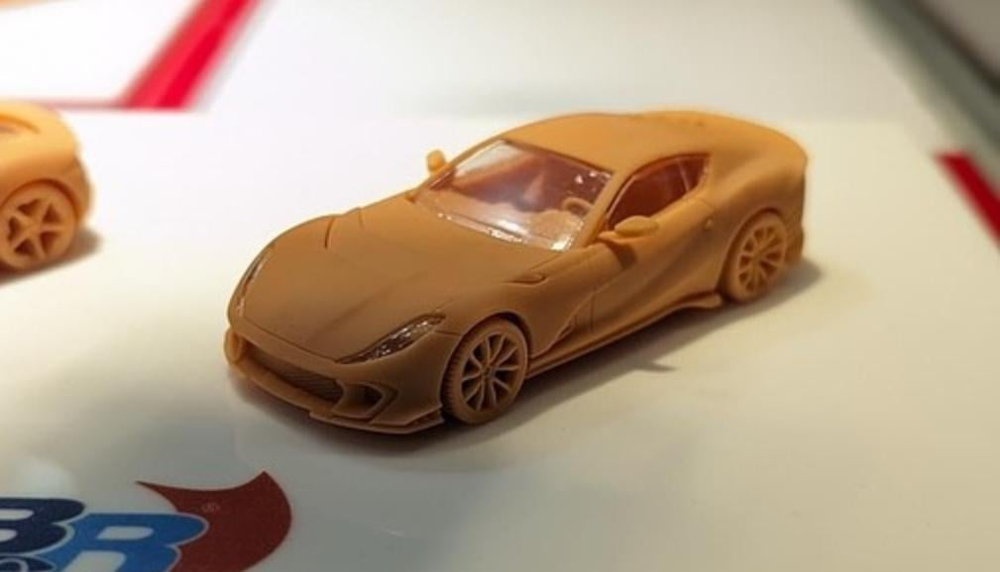
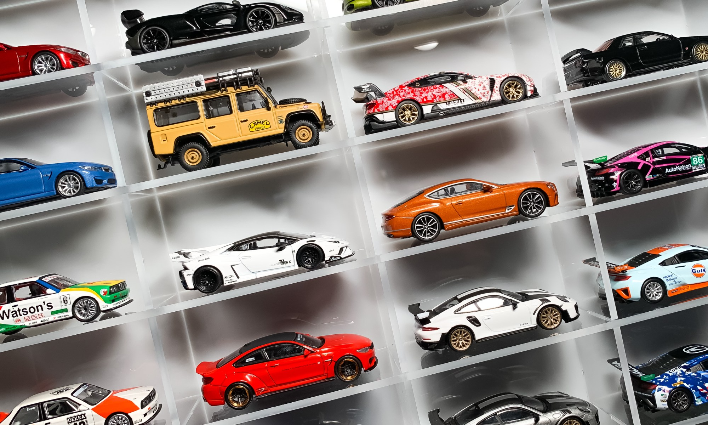

-Mini GT is a brand of 1/64 scale model cars launched by TSM Models in 2017 to expand its small scale diecast branch. With its unique balance between price and workmanship, it has captured the hearts of model car enthusiasts worldwide. Whether it is a vintage classic old car or a modern supercar with exaggerated lines, Mini GT could be realistically portrayed on a mold of about 7cm. Until today, Mini GT has cooperated with various brands and IPs, such as BBR, LBWK and Super GT.
-Among them, Lamborghini series and Nissan GTR R35 series are its most famous series, which MINIGT WIKI Beta.1 would introduce to you.

